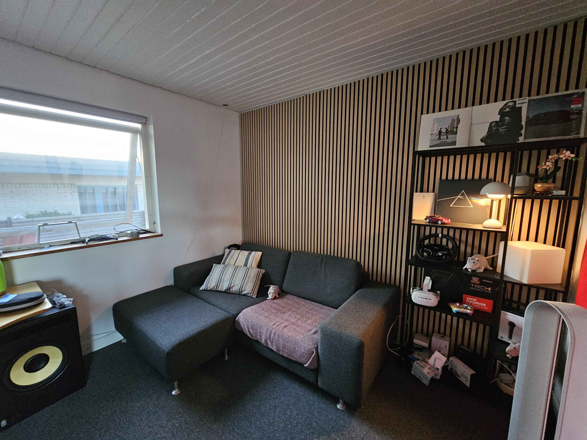
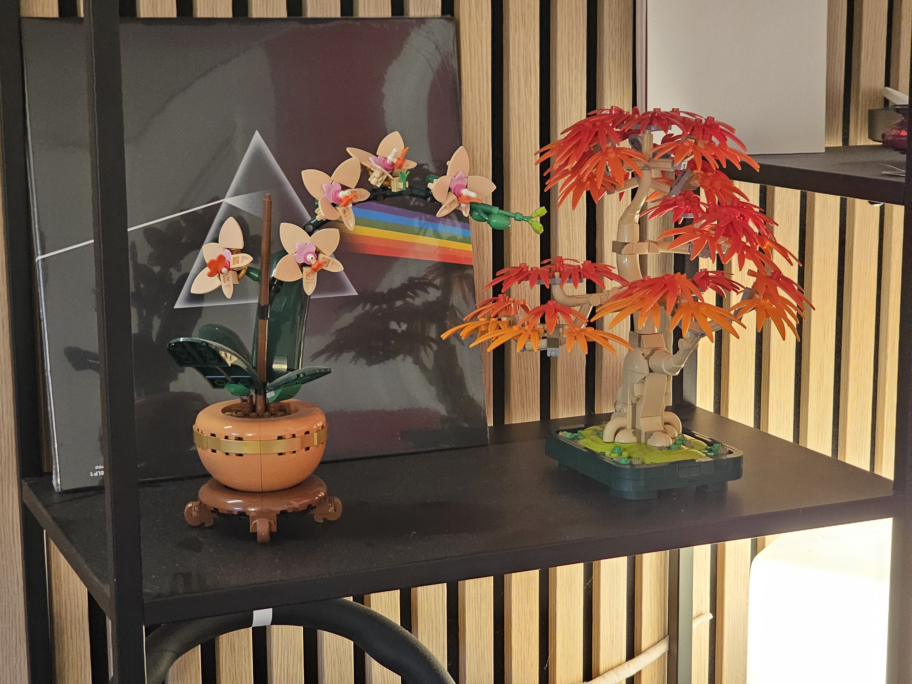
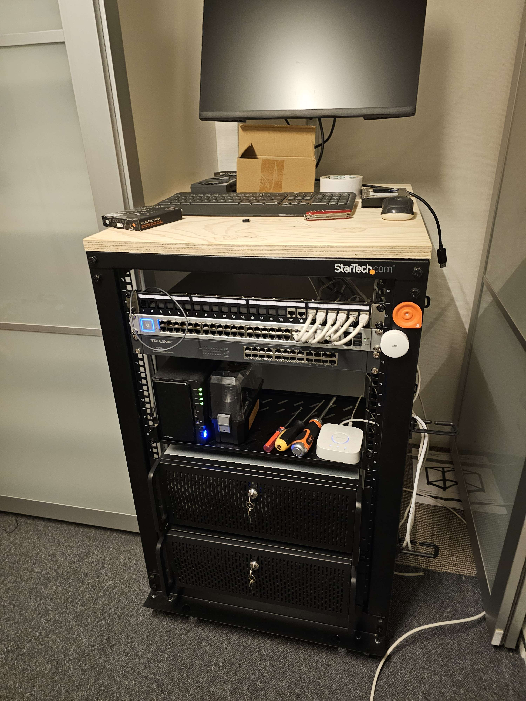
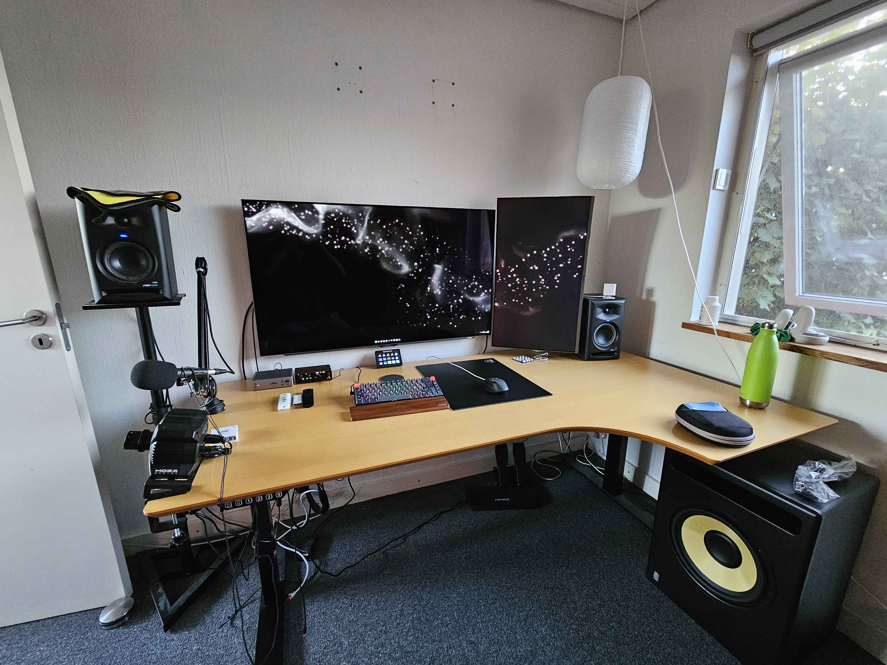
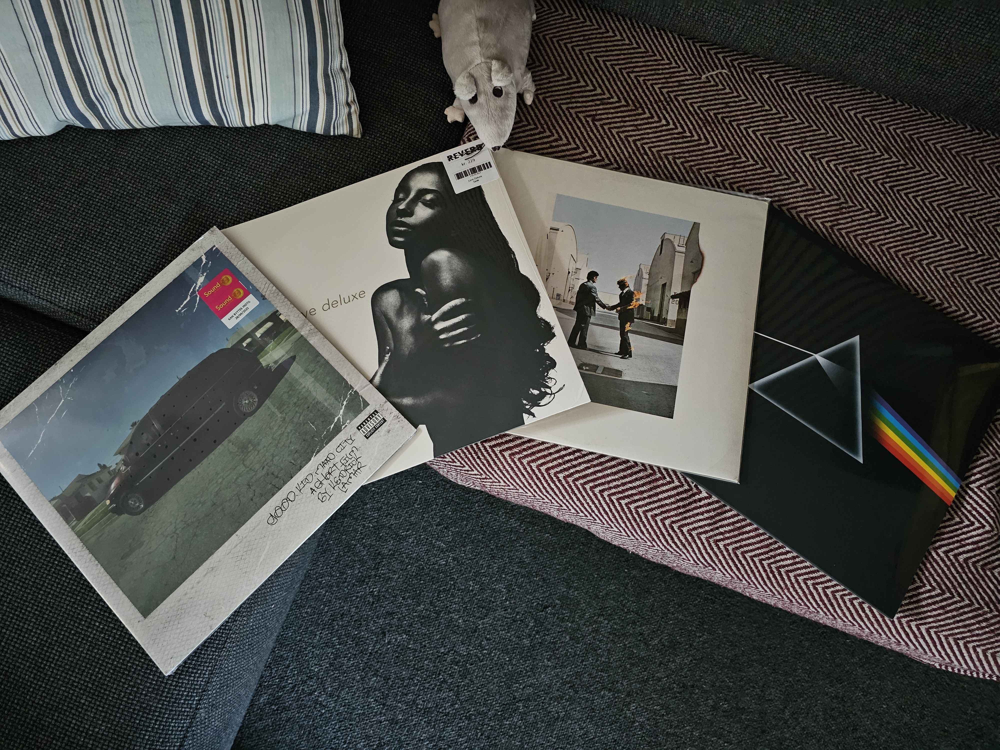
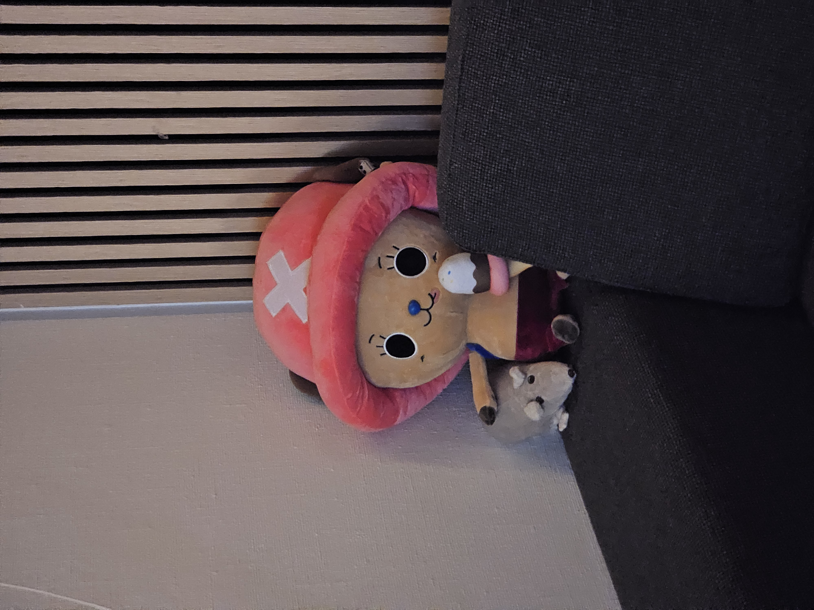
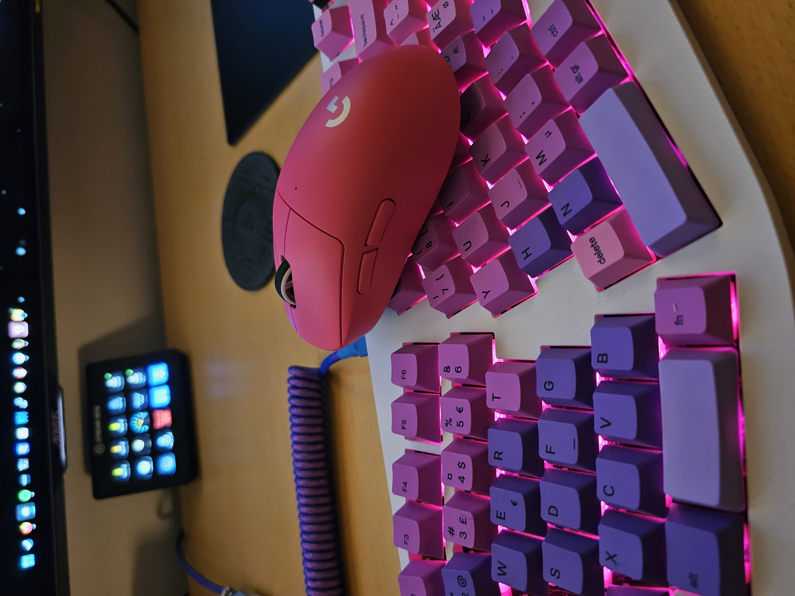
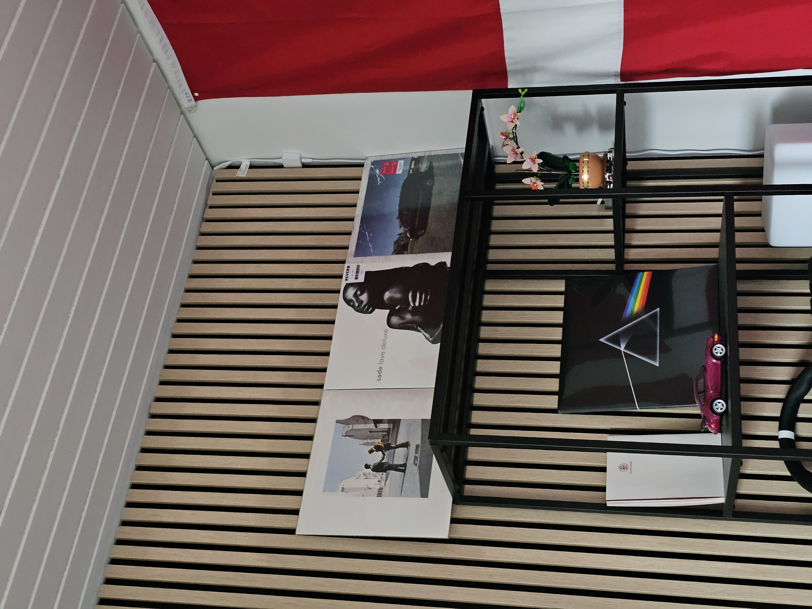

Infrastructure & Experimentation
I'm a Danish student studying Data & Communication with a specialty in Infrastructure. This is my homelab setup where I experiment with different technologies. I currently work as a DevOps intern.
Server Rack & Hardware
The hardware that powers my homelab environment.
| Device | CPU (& GPU) | RAM | Storage | OS/Notes |
|---|---|---|---|---|
| Main PC | i7-12700KF, 7900 XTX | 32GB DDR4 | 4TB SSD | Windows 11 |
| Bigboy | i5-12600K | 96GB DDR4 | 19.5TB Mixed | Proxmox v9.* |
| Mini | i5-7500T | 32GB DDR4 | 256GB SSD | Proxmox v9.* |
| Mini2 | i7-8700T | 32GB DDR4 | 2TB | Proxmox v9.* |
Services Running
Software and services self-hosted across my Proxmox cluster (Mini, Bobby, and BigBoy).
- OPNsense: Core firewall and routing for the lab environment.
- NPM: External access via Nginx Proxy Manager (Internal & DMZ instances).
- Connectivity: WireGuard for secure remote and Headscale setup for mesh networking to friends.
- AdGuard Home: Network-wide DNS blocking with high-availability sync (Primary, Secondary, and Backup nodes).
- Monitoring Stack: Prometheus, Grafana, and PVE Exporter for real-time cluster metrics and dashboards.
- Uptime Kuma: Self-hosted monitoring for service availability and heartbeat tracking.
- Management: Home Assistant for rack automation and UniFi Controller for network gear.
- TrueNAS: Dedicated storage management for the lab network.
- Proxmox Backup Server (PBS): Multiple instances for internal backups and a dedicated 1TB node for friends.
- Immich: Self-hosted photo and video management solution, really just a self hosted google photos.
- AMP (CubeCoders): Game server management utilizing a Control node and 2x DMZ workers. Along with remote worker nodes at different sites.
- Warracker: Open-source warranty tracking for lab hardware.
- StoatChat: Self-hosted communication service running in the DMZ.
- Personal Site: This website (nhvilhelmsen.com) is hosted locally within the cluster.
Experience & Qualifications
Been studying...
- CCNA: Enterprise Networking, Security, and Automation
- CCNA: Switching, Routing, and Wireless Essentials
- CCNP Enterprise: Advanced Routing
- CCNP Security
What I work with...
- Languages: Golang, C#, PowerShell, SQL
- Cloud: Lots of Azure management
- Virtualization: Proxmox VE, Hyper-V, Docker, K3S and a bit of K8S
Gallery







